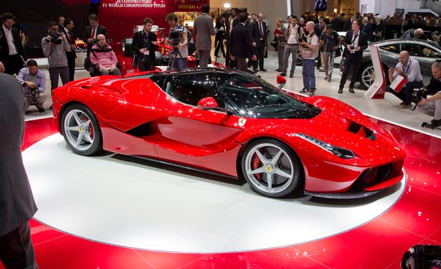

History of Ferrari
Early history
Enzo Ferrari, formerly a salesman and racing driver for Alfa Romeo, founded Scuderia Ferrari, a racing team, in 1929. Originally intended to service gentleman drivers and other amateur racers, Alfa Romeo's withdrawal from racing in 1933, combined with Enzo's connections within the company, turned Scuderia Ferrari into its unofficial representative on the track.[10] Alfa Romeo supplied racing cars to Ferrari, who eventually amassed some of the best drivers of the 1930s and won many races before the team's liquidation in 1937.[10][11]: 43

History of Mercedes
History
Mercedes-Benz traces its origins to Karl Benz's first internal combustion engine in a car, seen in the Benz Patent Motorwagen – financed by Bertha Benz's dowry[10] and patented in January 1886[11] – and Gottlieb Daimler and their engineer Wilhelm Maybach's conversion of a stagecoach, with the addition of a petrol engine, introduced later that year. The Mercedes automobile was first marketed in 1901 by Daimler Motoren Gesellschaft (DMG).